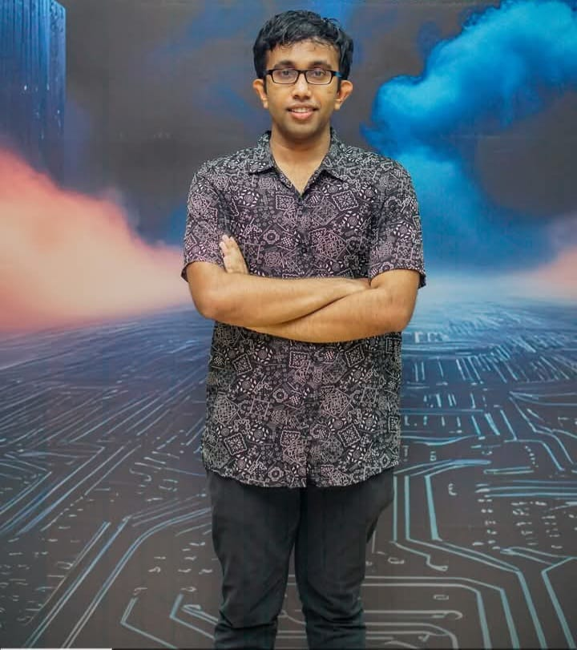

This project focuses on semantic-aware PCB defect detection using deep learning, with a planned VGG16 + Fusion classifier that combines deep and shallow features. The goal is to improve tiny defect detection on printed circuit boards through balanced feature fusion and robust classification.
DeepPCB + Kaggle PCB with 10k+ defect patches extracted.
VGG16 patch classifier achieved 98% accuracy in tests.
VGG16 + Fusion classifier with PCA-balanced features for reliable decisions.